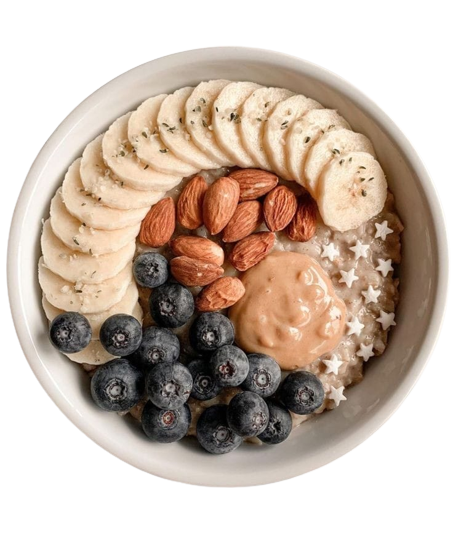

Food Tracker
About
Track progress toward your nutrition, water,
fitness, and weight loss goals with Food Tracker.
This all-in-one food tracker and health Website is like
having a nutrition coach, meal planner, and food diary
with you at all times.
Food Tracker isn’t another restrictive
diet Website. This is a health Website to help you learn about
your habits … see how you eat … make smarter food choices … find
motivation & support ... and conquer your health goals.


- 